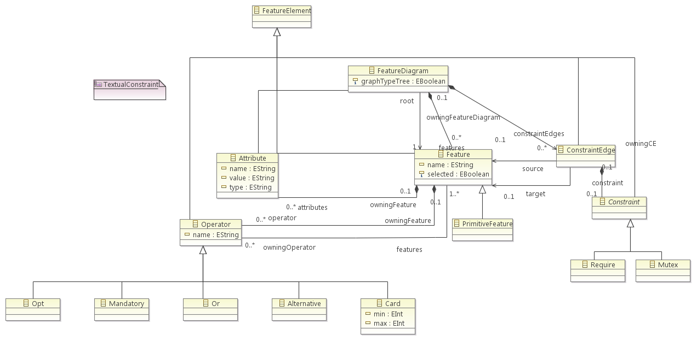

This section consists in a quick presentation of the metamodel used to create the feature diagram editor. The following picture presents this metamodel.

On this section we will present the feature diagram metamodel used in this tool (cf metamodel above). FeatureDiagram is the root class of the metamodel. This class has an attribute graphTypeTree which permits to determines whether if the feature disgram is a tree feature diagram or a Directed Acyclic Graph (DAG). It also contains a list of features (class Feature) which are represented in the feature diagram as a node. The special root node r is identify by the reference root from FeatureDiagram to Feature. In the metamodel, these operators are subtype of the class Operator, and each feature (class Feature) contains 0 or more operators. The class Feature also contains a list of edges (class Edge) allowing the construction of the setDE of decomposition edges. The set CE of constraint edges is represented in the metamodel by the class ConstraintEdge and they are contained by the class FeatureDiagram. Each ConstraintEdge contains either a Require constraint or a Mutex constraint. Model elements from the base model are stored directly on the Feature metaclass with the modelElements reference. To conclude the Attribute metaclass defines an attribute that we can add on a feature in order to store informations used to determines whether child must be selected. For example, we can add an attribute with the name of a country in a feature and choose to select one of the children feature according to this country.